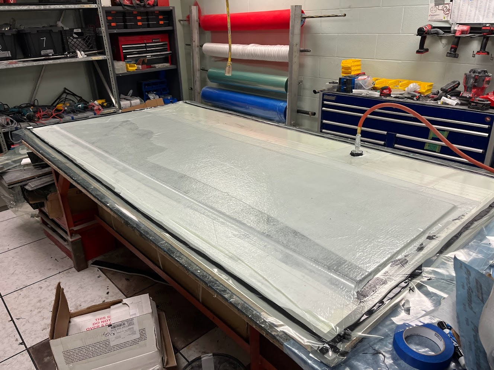
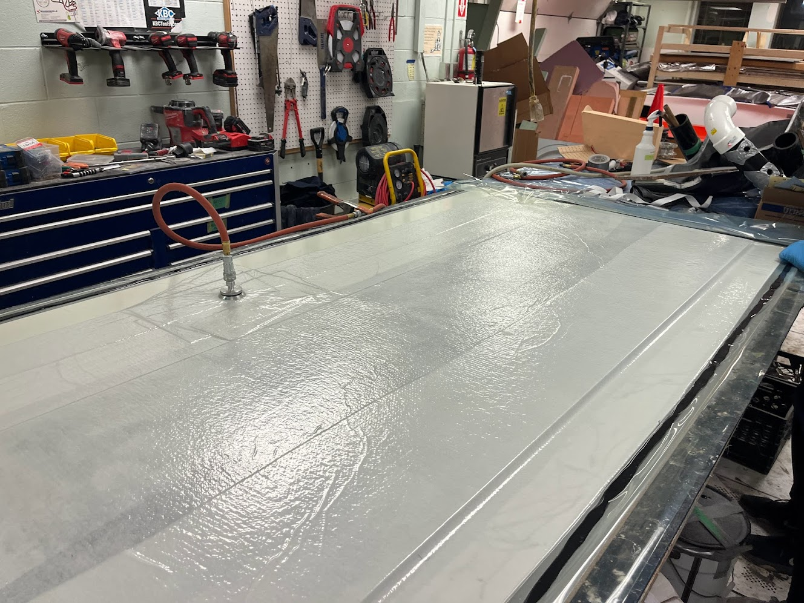
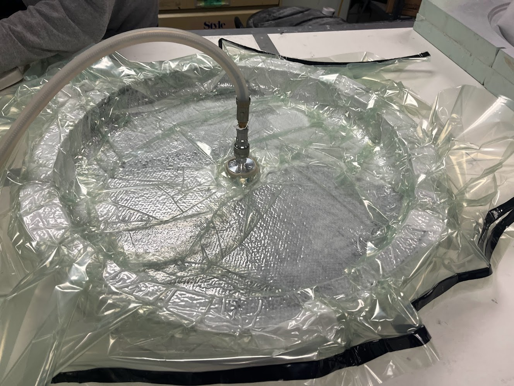
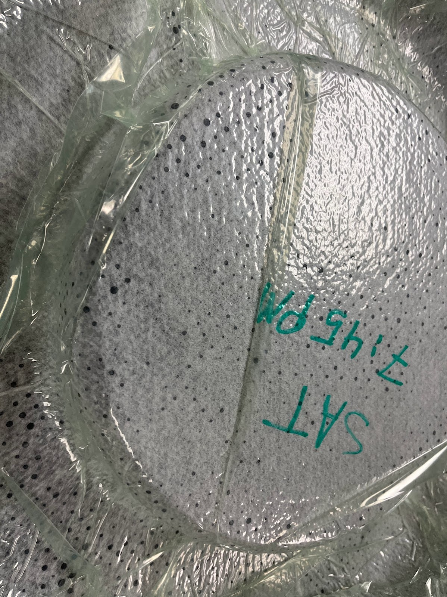

Sandwich Panels and Other Layups
 I have helped with numerous layups and vacuum bagging processes, and have led a few of my own. A couple tricky parts of the process are protecting the weave while handling and then ensuring there is no bridging in the bagging. On some of the more complicated geometries we have to put in pleats on the edges, giving the bag more surface area to work with. My favorite little moment in this process is when the resinstarts to get pulled out and you get these little circles of resin as seen below.
 